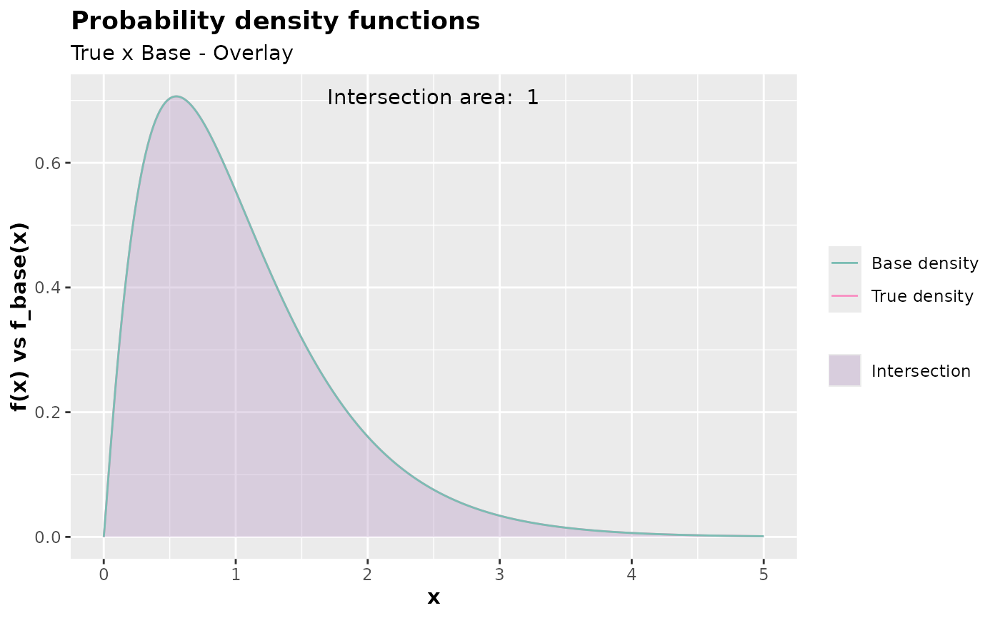

Inspect the probability density function used as the base with the theoretical density function from which observations are desired.
Usage
inspect(
f,
args_f,
f_base,
args_f_base,
xlim,
c = 1,
alpha = 0.4,
color_intersection = "#BB9FC9",
color_f = "#F890C2",
color_f_base = "#7BBDB3"
)Arguments
- f
Theoretical density function.
- args_f
List of arguments for the theoretical density function.
- f_base
Base density function.
- args_f_base
List of arguments for the base density function.
- xlim
The range of the x-axis.
- c
A constant that covers the base density function, with \(c \geq 1\). The default value is 1.
- alpha
The transparency of the base density function. The default value is 0.4
- color_intersection
Color of the intersection between the base density function and theoretical density functions.
- color_f
Color of the base density function.
- color_f_base
Color of the theoretical density function.
Value
An object of the gg and ggplot class comparing the theoretical
density function with the base density function. The object shows the
compared density functions, the intersection area between them, and the
value of the area.
Details
The function inspect() returns an object of the gg and ggplot class that
compares the probability density of two functions and is not useful for the
discrete case, only for the continuous one. Finding the parameters of the
base distribution that best approximate the theoretical distribution and the
smallest value of c that can cover the base distribution is a great strategy.
Something important to note is that the plot provides the value of the area of
intersection between the theoretical probability density function we want to
generate observations from and the probability density function used as the
base. It's desirable for this value to be as close to 1 as possible, ideally
When the intersection area between the probability density functions is 1, it means that the base probability density function passed to the
f_baseargument overlaps the theoretical density function passed to thefargument. This is crucial in the acceptance-rejection method. However, even if you don't use theinspect()function to find a suitable distribution, by finding viable args_base (list of arguments passed to f_base) and the value ofcso that the intersection area is 1, theaccept_reject()function already does this for you. Theinspect()function is helpful for finding a suitable base distribution, which increases the probability of acceptance, further reducing computational cost. Therefore, inspecting is a good practice.
If you use the accept_reject() function, even with parallelism enabled by
specifying parallel = TRUE in accept_reject() and find that the generation
time is high for your needs, consider inspecting the base distribution.
Examples
# Considering c = 1 (default)
inspect(
f = dweibull,
f_base = dgamma,
xlim = c(0,5),
args_f = list(shape = 2, scale = 1),
args_f_base = list(shape = 2.1, rate = 2),
c = 1
)
# Considering c = 1.35.
inspect(
f = dweibull,
f_base = dgamma,
xlim = c(0,5),
args_f = list(shape = 2, scale = 1),
args_f_base = list(shape = 2.1, rate = 2),
c = 1.35
)
# Plotting f equal to f_base. This would be the best-case scenario, which,
# in practice, is unlikely.
inspect(
f = dgamma,
f_base = dgamma,
xlim = c(0,5),
args_f = list(shape = 2.1, rate = 2),
args_f_base = list(shape = 2.1, rate = 2),
c = 1
)
